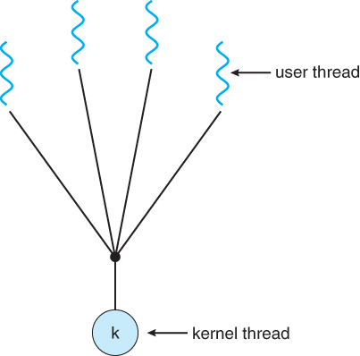

Multithreading Models
- Many-To-One (N:1) Model: A process with N
threads will map to a single kernel process.
- It is also known as user-level threading since the implementation of the threads is user-program-dependent.
- Thread management is handled by the thread library in the user space, which is very efficient.
- The problem is that, when one of the user threads blocks, the other threads block as well since they all depend on a single kernel thread. In addition, due to the single kernel thread, which can run on only 1 CPU, threads can’t run in true parallelism.

Many-to-one multithreading model. Taken from Bell, John T. "Threads." University of Illinois, Chicago.
 These notes by Miriam Briskman are licensed under CC BY-NC 4.0 and based on sources.
These notes by Miriam Briskman are licensed under CC BY-NC 4.0 and based on sources.